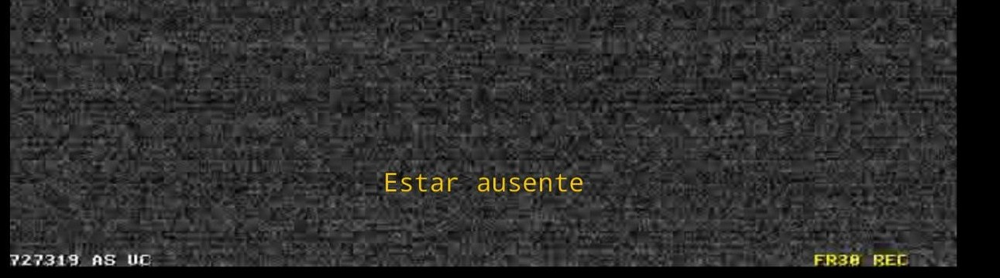

Serie de capturas de camaras de seguridad alrededor del mundo, que han sido hackeadas o por algun motivo permanecen accesibles sin contraseña
"Estar Ausente" explora el problema de la ubicuidad tecnológica, el mirar sin ser mirado, y la vigilancia panoptica que permiten los sistemas digitales acutales. Este horizonte de vigilancia algoritmica, en ocasiones entra en colisión con la entropia, el caos, el desperfecto, o la simple desidia. En esta conjunción emergen las imagenes de esta obra, con cámaras apuntando a lugares abandonados, desiertos, o poseedores de una vida minima y una cotidianeidad que puede maravillarnos cuando la intención no es vigilar, sino contemplar
De estas capturas se realizaron impresiones unicas sobre frames seleccionados, para posteriormente destruir el digital del que provienen. En este paso de lo digital a lo analógico, se re-construye la ocurrencia de un momento singular, en el que a menudo fuí el unico espectador a la distancia